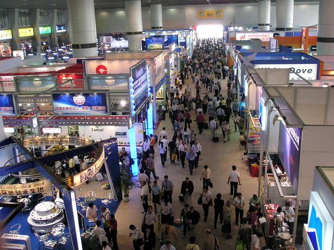
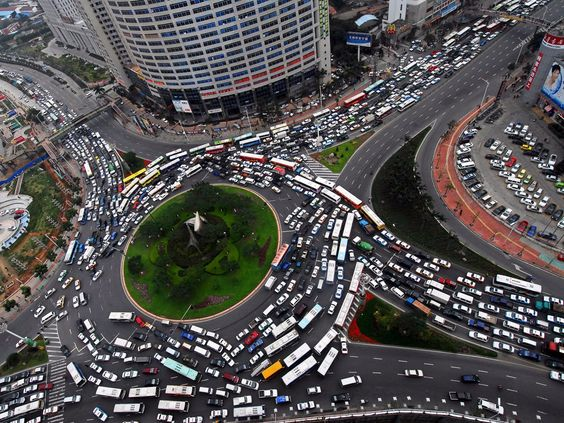
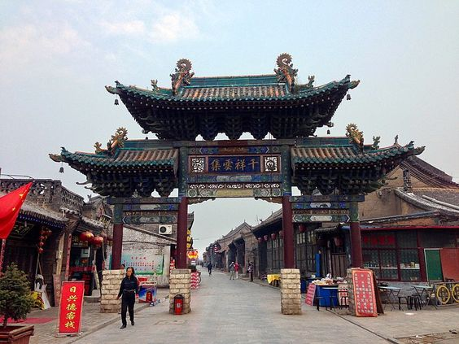
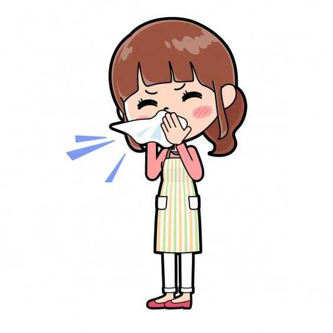
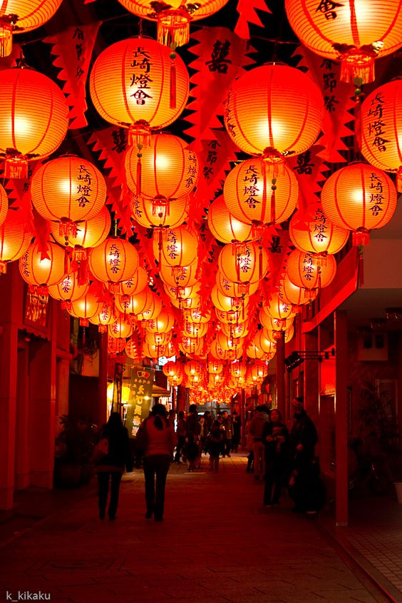
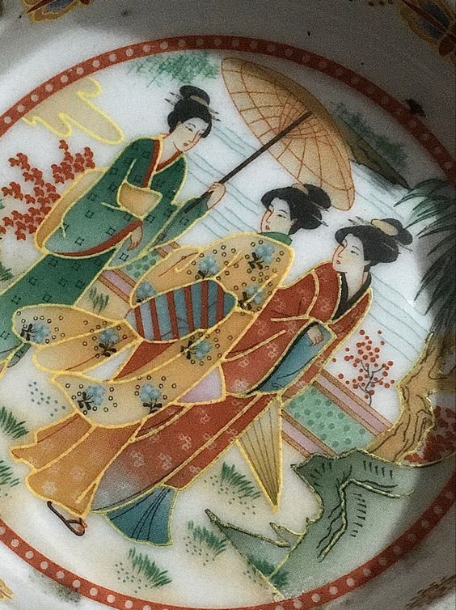

China
- El mayor exportador del mundo
- China es el mayor exportador mundial, superando a Estados Unidos y Alemania, también consideradas potencias mundiales.
-
País que es conocido por ser el centro de fabricación de productos tecnológicos.
- Como la alta oferta y el bajo costo de la mano de obra ofrecen una ventaja competitiva en el mercado internacional, muchas empresas, como Apple y Samsung, por ejemplo, apuestan por montar fábricas en China.

- Trafico intenso
-
Conducir en China no es una tarea fácil, ya que hay mucho tráfico, especialmente en el centro de las ciudades.
- Pekín, la capital del país, tiene el récord de haber tenido uno de los peores atascos de tráfico de la historia.
-
Fueron 12 días a lo largo de 62 kilómetros por una carretera.

- El pais tiene solo un uso horaio
-
A pesar de tener un vasto territorio, con casi 9,6 millones de km², el país sigue su propio modelo de organización del tiempo, es decir, con un solo huso horario.
-
China alguna vez tuvo 5 zonas horarias diferentes, un período que ocurrió después de la caída de la dinastía Qing (1911).

- El paies que mas energia consume
-
China es el país que más energía consume del mundo.
-
Resulta un problema es que el destino utiliza carbón mineral (altamente contaminante) para generar cerca del 70% de su energía.

- Escupir y sonarse la nariz en la calle son señales de higuine
-
Puede parecer raro, pero, para los chinos, escupir y sonarse la nariz en la calle son considerados señales de higiene.
-
En China, este tipo de actitud significa que la persona está sacando algo sucio del cuerpo.

- Supersticon con los colores
-
El color rojo significa felicidad, y, a diferencia de otros países, que utilizan el color negro, el blanco suele ser el color que se usa para acudir a los funerales.

- Limite pra tener hijos
-
Debido a la alta población del país, el gobierno creó una ley que determina que cada pareja solo puede tener un hijo.
-
Esta ley estuvo vigente en el país entre 1980 y 2015. Actualmente, la ley china permite que cada familia tenga hasta 3 hijos.
